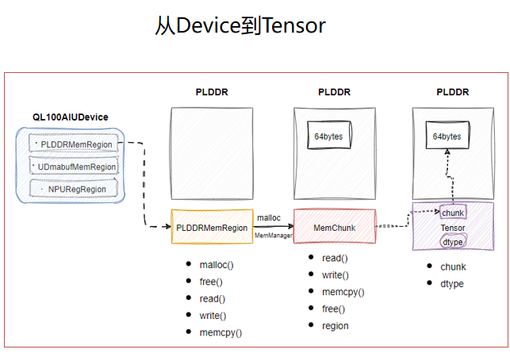
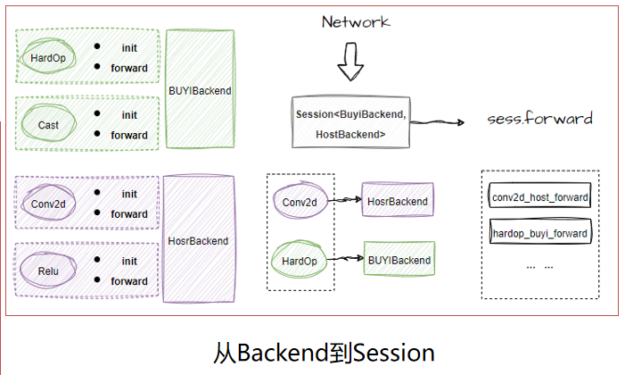

Icraft XRT#
Icraft XRT是统一前向后的运行时，在XRT中，不再区分仿真和运行，而是把不同的计算资源抽象为不同的后端，使得Icraft中的网络能够在任意的计算资源上完成计算。
XRT主要有以下数据结构组成：
Device：抽象了具体的硬件设备，比如一个板卡。一个Device中包含若干个RegRegion和MemRegion，分别表示不同的寄存器区域和内存区域MemChunk：MemRegion分配的一块连续内存Tensor：表示前向的输入和输出，包含dtype和chunk等属性分别描述数据类型和和数据Backend：表示某一种计算资源，比如Host(CPU), Cuda（GPU）和Buyi(加速器)。Backend包含了其所支持的每一个算子在该计算资源上初始化和前向计算的逻辑。Session：表示会话（进程），主要的用户接口。创建Session的过程就是资源分配的过程，即将网络的每一个算子绑定到合适的计算资源（Backend）上。
以上数据结构之间的关系如下图所示：


〇 用户接口#
Icraft 提供了C++ API和Python API作为用户接口。
一 快速开始#
1.1 创建Session#
创建Session的过程就是将算子绑定到后端的过程。创建Session有三种方法：
按优先级将算子绑定到指定的后端
直接使用绑定好算子和设备的后端
直接使用序列化Session得到的快照文件
1.1.1 按优先级创建Session#
C++ 示例#
1auto json_file = "D:/Workspace/V3.0/SSD_BY.json";
2auto raw_file = "D:/Workspace/V3.0/SSD_BY.raw";
3auto img_file = "D:/Workspace/V3.0/ssd300.png";
4
5// 打开设备
6auto host_device = HostDevice::Default();
7auto buyi_device = Device::Open("axi://ql100aiu?npu=0x40000000&dma=0x80000000");
8
9// 加载网络
10auto network = Network::CreateFromJsonFile(json_file);
11network.loadParamsFromFile(raw_file);
12
13// 创建Session1
14// 该方法会根据模板参数的顺序，自动创建Backend对象
15// 首先尝试将算子绑定到BuyiBackend上，如果不支持，则绑定到HostBackend上
16auto sess1 = Session::Create<BuyiBackend, HostBackend>(network, { buyi_device, host_device });
17
18// 获取sess1所有的Backends
19auto& backends = sess1->backends;
20auto buyi_backend = backends[0].cast<BuyiBackend>();
21auto host_backend = backends[1].cast<HostBackend>();
22
23// 手动创建Backend对象
24auto buyi_backend = BuyiBackend::Init();
25auto host_backend = HostBackend::Init();
26
27// 创建Session2
28// 如果不适用模板Create方法，也可以使用CreateByOrder方法，将算子按顺序绑定到已有的Backend对象上
29auto sess2 = Session::CreateByOrder(network, {buyi_backend, host_backend}, {buyi_device, host_device});
Python示例#
1# 导入必要的库
2import xir
3from xrt import *
4from host_backend import *
5from buyi_backend import *
6import unittest
7
8# 获取一个网络
9# Input → Conv2d → Cast → HardOp → Cast → Relu → Maxpool → Output
10network = GenerateNetwork()
11
12# 创建Session，按顺序传入想要绑定的后端类型
13sess1 = Session.Create([BuyiBackend, HostBackend], network.view(0), [ HostDevice.Default(), Device() ])
14sess1.apply()
15
16backend_bindings = sess1.backendBindings()
17self.assertTrue(backend_bindings[1].is_type(HostBackend)) # Conv2d
18self.assertTrue(backend_bindings[2].is_type(HostBackend)) # Cast
19self.assertTrue(backend_bindings[3].is_type(BuyiBackend)) # HardOp
20self.assertTrue(backend_bindings[4].is_type(BuyiBackend)) # Cast
21self.assertTrue(backend_bindings[5].is_type(HostBackend)) # Relu
22self.assertTrue(backend_bindings[6].is_type(HostBackend)) # Maxpool
23
24# 也可以使用CreateByOrder方法，将算子按顺序绑定到已有的Backend对象上
25sess2 = Session.CreateByOrder(network.view(0), [BuyiBackend.Init(), HostBackend.Init()], [ HostDevice.Default(), Device() ])
1.1.2 使用绑定好算子和设备的后端创建Session#
C++ 示例#
1// 创建网络
2auto network = generate_network("whatever", Framework::PYTORCH, "v1.9");
3
4// 打开设备
5auto host_device = HostDevice::Default();
6auto buyi_device = Device::Open("axi://ql100aiu?npu=0x40000000&dma=0x80000000");
7
8// 创建后端，并绑定网络视图和设备
9auto host_backend = Backend::Create<HostBackend>(network.view({0, 1, 2, 5, 6, 7}), host_device);
10auto buyi_backend = Backend::Create<BuyiBackend>(network.view(std::vector<int64_t>{3, 4}), buyi_device);
11
12// 创建Session
13// 直接使用指定后端已有的绑定关系
14auto sess = Session::CreateWithBackends(network, { host_backend, buyi_backend });
Python示例#
1# 导入必要的库
2import xir
3from xrt import *
4from host_backend import *
5from buyi_backend import *
6import unittest
7
8# 获取一个网络
9# Input → Conv2d → Cast → HardOp → Cast → Relu → Maxpool → Output
10network = GenerateNetwork()
11
12# 创建HostBackend，绑定算子0, 1, 2, 5, 6, 7
13host_backend = Backend.Create(HostBackend, network.view([0, 1, 2, 5, 6, 7]), HostDevice.Default())
14# 创建BuyiBackend，绑定算子3, 4
15buyi_backend = Backend.Create(BuyiBackend, network.view([3, 4]), Device())
16
17# 创建Session
18# 直接使用指定后端已有的绑定关系
19sess = Session.CreateWithBackends(network.view(0), [ host_backend, buyi_backend ])
20sess.apply()
21
22backend_bindings = sess.backendBindings()
23self.assertTrue(backend_bindings[1].is_type(HostBackend)) # Conv2d
24self.assertTrue(backend_bindings[2].is_type(HostBackend)) # Cast
25self.assertTrue(backend_bindings[3].is_type(BuyiBackend)) # HardOp
26self.assertTrue(backend_bindings[4].is_type(BuyiBackend)) # Cast
27self.assertTrue(backend_bindings[5].is_type(HostBackend)) # Relu
28self.assertTrue(backend_bindings[6].is_type(HostBackend)) # Maxpool
1.1.3 使用序列化得到的快照文件#
该创建session的方式包含了构造网络network和apply部署， 且mmu模式、合并算子和内存优化等配置无效，是与生成快照文件时的配置一致。 序列化session生成快照文件的方法详见1.2小节。
C++ 示例#
1// 直接使用序列化得到的快照文件创建Session
2Session sess = Session::CreateWithSnapshot(snapshot_file, { BuyiBackend::Init(), HostBackend::Init() }, { device, HostDevice::Default() });
Python示例#
1# 直接使用序列化得到的快照文件创建Session
2sess = Session.CreateWithSnapshot(snapshot_file,[ BuyiBackend, HostBackend ],[device, HostDevice.Default()])
1.2 序列化Session生成快照文件#
目前序列化session仅支持BY阶段的网络，对device、backend的各项配置请在序列化前进行调用。
1// 打开设备
2
3// 加载网络
4
5// 创建Session
6
7// 部署session
8
9// 序列化session，并保存快照文件至指定路径
10sess.dumpSnapshot(filepath);
1# 打开设备
2
3# 加载网络
4
5# 创建Session
6
7# 部署session
8
9# 序列化session，并保存快照文件至指定路径
10sess.dumpSnapshot(filepath)
提示
代码示例中的缺省部分参考1.1.1节，这里仅展示必要的接口使用方式和调用位置
1.3 Session前向#
为了满足不同场景的需求，Session提供了两个前向的API：
forward: 直接前向Session中绑定的整个网络视图
stepTo: 前向到指定的算子
1.3.1 forward前向#
C++ 示例#
1auto json_file = "D:/Workspace/V3.0/ssd300_quantized.json";
2auto raw_file = "D:/Workspace/V3.0/ssd300_quantized.raw";
3auto img_file = "D:/Workspace/V3.0/resnet18.png";
4
5// 创建网络
6auto network = Network::CreateFromJsonFile(json_file);
7network.loadParamsFromFile(raw_file);
8
9// 创建Session
10auto sess = Session::Create<HostBackend>(network, { HostDevice::Default()});
11// 应用Session的设置
12sess.apply();
13
14// 构造输入Tensor
15auto input_dtype = network.inputOp()[0].dtype();
16auto input_tensor = img2Tensor(img_file, input_dtype);
17
18// 前向Session中绑定的整个网络视图
19// 前向的过程即遍历网络视图中的每一个算子，执行其指定后端上的前向函数
20// 若算子的输入来自外部，则按顺序从输入列表中取
21auto output_tensors = sess.forward({ input_tensor });
Python示例#
待补充
1.3.2 stepTo前向#
C++ 示例#
1auto json_file = "D:/Workspace/V3.0/ssd300_quantized.json";
2auto raw_file = "D:/Workspace/V3.0/ssd300_quantized.raw";
3auto img_file = "D:/Workspace/V3.0/resnet18.png";
4
5// 创建网络
6auto network = Network::CreateFromJsonFile(json_file);
7network.loadParamsFromFile(raw_file);
8
9// 创建Session
10auto sess = Session::Create<HostBackend>(network, { HostDevice::Default()});
11// 应用Session的设置
12sess.apply();
13
14// 构造输入Tensor
15auto input_dtype = network.inputOp()[0].dtype();
16auto input_tensor = img2Tensor(img_file, input_dtype);
17// 用于保存输出
18auto output_tensors = std::vector<Tensor>();
19
20// 以下代码使用stepTo实现了获取网络每个算子的执行结果，并dump
21for (auto&& op : sess->network_view->ops) {
22 // 前向到Op ID指定的算子，并返回该算子的输出
23 // stepTo会记录上次前向到的位置，下次调用时会从记录位置开始继续前向
24 // 只有在算子的输入来自外部时，才会取输入Tensor列表中的，否则使用生产者算子产生的Tensor
25 output_tensors = sess.stepTo(op.opId(), { input_tensor });
26
27 for (uint64_t i = 0; i < op.outputsNum(); i++) {
28 auto output = op[i];
29 auto output_tensor = output_tensors[i];
30
31 std::string dump_dir = "dumps.SQB";
32 std::filesystem::create_directory(dump_dir);
33 auto os = std::ofstream(fmt::format("{}/{}.ftmp", dump_dir, output->v_id), std::ios::binary);
34 output_tensors[0].dump(os, "SQB");
35 }
36}
Python示例#
待补充
二 数据结构#
2.1 MemPtr#
MemPtr 是对内存地址的统一抽象，无论是Host上、加速器上还是交换空间的内存地址都能通过MemPtr表达。
MemPtr 有三种类型：
PtrType::CPTR：C指针类型，主要来表达Host（操作系统）上的内存地址PtrType::ADDR：物理地址类型，主要来表达加速器上的内存地址PtrType::BOTH：包含以上两者，即既可以使用C指针访问，又可以通过物理地址访问，主要来表达交换空间的内存地址
MemPtr 可以表达空指针，即表示不指向任何内存地址。当且仅当 MemPtr 的类型是 PtrType::CPTR 且C指针为 nullptr 时，表示该 MemPtr 为空指针。
以下是一些 MemPtr 的使用和测试示例：
1// 空指针的几种构造方法
2auto null_ptr1 = MemPtr::Init();
3auto null_ptr2 = MemPtr(nullptr);
4auto null_ptr3 = MemPtr::NullPtr();
5REQUIRE(null_ptr1.isNull());
6REQUIRE(null_ptr2.isNull());
7REQUIRE(null_ptr3.isNull());
8
9// 构造一个PtrType::CPTR类型的MemPtr
10char tmp[8];
11auto c_ptr1 = MemPtr(tmp);
12REQUIRE(c_ptr1.ptype() == PtrType::CPTR);
13REQUIRE(c_ptr1.cptr() == tmp);
14REQUIRE(!c_ptr1.isNull());
15
16// 构造一个PtrType::ADDR类型的MemPtr
17auto addr = 0x40000000;
18auto addr_ptr1 = MemPtr(addr);
19REQUIRE(addr_ptr1.ptype() == PtrType::ADDR);
20REQUIRE(addr_ptr1.addr() == addr);
21REQUIRE(!addr_ptr1.isNull());
22
23// 构造一个PtrType::BOTH类型的MemPtr
24auto both_ptr1 = MemPtr(tmp, addr);
25REQUIRE(both_ptr1.ptype() == PtrType::BOTH);
26REQUIRE(both_ptr1.cptr() == tmp);
27REQUIRE(both_ptr1.addr() == addr);
28REQUIRE(!both_ptr1.isNull());
29
30// MemPtr的一些运算
31auto both_ptr2 = 40 + both_ptr1;
32REQUIRE(both_ptr2 - both_ptr1 == 40);
33REQUIRE(both_ptr1 - both_ptr2 == -40);
34REQUIRE(both_ptr2 - 40 == both_ptr1);
35REQUIRE(both_ptr1 < both_ptr2);
36REQUIRE(both_ptr1 <= both_ptr2);
37REQUIRE(both_ptr2 > both_ptr1);
38REQUIRE(both_ptr2 >= both_ptr1);
2.2 MemRegion#
MemRegion 表示设备上的一块独立的内存区域，不同的内存区域的内存访问实现方式可能不相同，比如布衣架构设备上的PLDDR和交换空间的区域。
MemRegion 抽象了一些内存访问的接口，这些接口需要被具体的 MemRegion 子类来实现。以下以 SampleMemRegion 为例，展示具体的接口定义和实现方法：
1 class SampleMemRegionNode : public NodeBase<SampleMemRegionNode, MemRegionNode> {
2 private:
3 /** MemRegion的初始化接口，在该接口的实现中初始化资源 */
4 virtual void init() override { ... ... };
5
6 /** MemRegion的关闭接口，在该接口的实现中关闭初始化的资源 */
7 virtual void deinit() override { ... ... };
8
9 /**
10 * @brief MemRegion的读接口，将指定位置的数据读到数据缓存.
11 * @param dest 数据被读取到char*表示的缓存
12 * @param src 从该位置开始读取数据
13 * @param byte_size 读取数据的字节大小
14 */
15 virtual void read(char* dest, const MemPtr& src, uint64_t byte_size) const override { ... ... };
16
17 /**
18 * @brief MemRegion的写接口，将数据缓存中数据写到指定位置.
19 * @param dest 数据被写入的位置
20 * @param src char*表示的数据缓存
21 * @param byte_size 写入数据的字节大小
22 */
23 virtual void write(const MemPtr& dest, char* src, uint64_t byte_size) const override { ... ... };
24
25 /**
26 * @brief MemRegion的内存分配接口，分配指定大小的内存.
27 * @param byte_size 分配内存的大小
28 * @param auto_free 指定分配的内存是否会被自动释放
29 */
30 virtual MemChunk malloc(uint64_t byte_size, bool auto_free) const override { ... ... };
31
32 /**
33 * @brief MemRegion的内存分配接口，尝试分配指定位置开始的内存
34 * @param begin 指定的内存位置
35 * @param byte_size 分配内存的大小
36 * @param deleter 内存释放的自定义函数，若指定了FChunkDeleter，则调用该函数来释放内存
37 * @param auto_free 指定分配的内存是否会被自动释放
38 */
39 virtual MemChunk malloc(MemPtr begin, uint64_t byte_size, FChunkDeleter deleter, bool auto_free) const override { ... ... };
40
41 /**
42 * @brief MemRegion的内存释放接口，释放指定位置的内存
43 * @param src 指定的内存位置
44 */
45 virtual void free(const MemPtr& src) const override { ... ... };
46
47 /**
48 * @brief MemRegion的内存复制接口，在指定的内存位置间复制数据
49 * @param dest 内存复制的目的位置
50 * @param src 内存复制的源位置
51 * @param byte_size 内存复制的字节大小
52 */
53 virtual void memcpy(const MemPtr& dest, const MemPtr& src, uint64_t byte_size) const override { ... ... };
54
55 /**
56 * @brief MemRegion的跨MemRegion内存复制接口
57 * @param dest_ptr 内存复制的目的位置
58 * @param src_region 内存复制的源MemRegion
59 * @param src_ptr 内存复制的源位置
60 * @param byte_size 内存复制的字节大小
61 *
62 * @note 该接口有默认实现，即将源MemRegion的数据复制到Host，然后写的目的MemRegion.
63 * 若硬件对两个MemRegion之间的复制有特殊优化，可以覆盖实现
64 */
65 virtual void memcpy(
66 const MemPtr& dest_ptr,
67 const MemRegion& src_region,
68 const MemPtr& src_ptr,
69 uint64_t byte_size
70 ) const override { ... ... };
71 };
72
73 class SampleMemRegion : public HandleBase<SampleMemRegion, MemRegion, SampleMemRegionNode> {};
更详细的示例请参考AXIQL100AIUDevice中 AXIQL100AIUdmaMemRegion 和 AXIQL100AIPLDDRMemRegion 的实现。
2.3 RegRegion#
RegRegion 表示设备上的一块独立的寄存器区域，不同的寄存器区域的内存访问实现方式可能不相同。
RegRegion 抽象了一些寄存器访问的接口，这些接口需要被具体的 RegRegion 子类来实现。以下以 SampleRegRegion 为例，展示具体的接口定义和实现方法：
1class SampleRegRegionNode : public NodeBase<SampleRegRegionNode, RegRegionNode> {
2private:
3 /** RegRegion的初始化接口，在该接口的实现中初始化资源 */
4 virtual void init() override { ... ... }
5
6 /** RegRegion的关闭接口，在该接口的实现中关闭初始化的资源 */
7 virtual void deinit() override { ... ... }
8
9 /**
10 * @brief RegRegion的读数据接口.
11 * @param addr 读取的地址
12 * @param relative 是否以相对地址读取数据
13 * @return 读取到的寄存器数据
14 */
15 virtual uint64_t read(uint64_t addr, bool relative = false) const override { ... ... }
16
17 /**
18 * @brief RegRegion的写数据接口.
19 * @param addr 写入的地址
20 * @param data 写入的数据
21 * @param relative 是否以相对地址写入数据
22 */
23 virtual void write(uint64_t addr, uint64_t data, bool relative = false) const override { ... ... }
24};
25
26class SampleRegRegion : public HandleBase<SampleRegRegion, RegRegion, SampleRegRegionNode> {};
2.4 MemChunk#
MemChunk 表示某一个内存区域上分配的一块连续内存块。MemChunk 没有构造函数，所有的 MemChunk 都是由 MemRegion 的 malloc 方法分配产生的。
MemRegion 的 malloc 方法具有以下两种形式：
malloc(uint64_t byte_size, bool auto_free = true)：申请分配指定大小的内存块，当auto_free = true时，分配的内存在MemChunkNode析构时会自动释放，否则则不会自动释放。malloc(MemPtr begin, uint64_t byte_size, FChunkDeleter deleter, bool auto_free): 申请分配指定位置开始的内存。该接口允许自定义内存释放方法，当deleter不为空时，会调用deleter来释放内存；auto_free的含义同上。
MemChunk 具有读写等一些列方法，当通过 malloc 分配得到 MemChunk 后，可以通过这些方法来操作分配所得内存：
read：读取数据write: 写入数据copyFrom：从其他MemChunk复制数据free：释放该MemChunk所占用的内存isOn：检查该MemChunk是否位于某个MemRegion上
以上方法的具体定义请参考API。
2.5 Device#
Device 是一系列 MemRegion 和 RegRegion 的集合。实现一个 Device 的主要过程就是声明该设备包含哪些 MemRegion 和 RegRegion
以下以 AXIQL100AIUDevice 为例，展示Device的实现方法：
1class AXIQL100AIUDeviceNode : public NodeBase<AXIQL100AIUDeviceNode, BuyiDeviceNode> {
2public:
3 // 调用宏声明该设备所包含的MemRegion和RegRegion
4 // 需要注意的是AXIQL100AIPLDDRMemRegion需要依赖AXIQL100AIUdmaMemRegion，因此二者的声明有先后顺序
5 // 还需要注意的是每个设备都包含一个默认的MemRegion和RegRegion
6 ICRAFT_DECLARE_DEVICE_NODE(AXIQL100AIUDeviceNode){
7 ICRAFT_MEM_REGION_FIELD(udma, AXIQL100AIUdmaMemRegion);
8 ICRAFT_DEFAULT_MEM_REGION_FIELD(plddr, AXIQL100AIPLDDRMemRegion);
9 ICRAFT_DEFAULT_REG_REGION_FIELD(npu, AXIQL100RegRegion);
10 }
11
12 // 实现初始化函数，在设备初始化是做一些信息打印
13 virtual void init() override {
14 spdlog::info("设备初始化成功,版本信息：");
15 for(auto&& [i, v] : version()){
16 spdlog::info("\t{}: {}", i, v);
17 }
18 spdlog::info("设备协议：{}", protocol);
19 spdlog::info("设备名称：{}", device);
20 spdlog::info("设备参数：");
21 for(auto&& [k, v] : params){
22 spdlog::info("\t{}: {}", k, v);
23 }
24 reset(0);
25 }
26
27 virtual void deinit() override {
28
29 }
30};
31
32class AXIQL100AIUDevice : public HandleBase<AXIQL100AIUDevice, BuyiDevice, AXIQL100AIUDeviceNode> {};
33
34// 注册该设备，注册后即可通过该URL打开设备
35ICRAFT_REGISTER_DEVICE("axi://ql100aiu", AXIQL100AIUDevice);
2.6 Tensor#
Tensor 表示前向工程中算子的输入和输出，包含 dtype 和 chunk 等属性分别描述数据类型和和数据。
以下是一些 Tensor 的使用和测试示例：
1// 使用已有的TensorType和MemChunk构造
2auto host_mregion = HostDevice::MemRegion();
3auto chunk1 = host_mregion.malloc(ttype1.bytes());
4auto ttype1 = TensorType(FloatType::FP32(), { 1, 416, 416, 3 }, Layout("NHWC"));
5auto tensor1 = Tensor(ttype1, chunk1);
6auto data1 = tensor1.data();
7
8REQUIRE(data1 == chunk1->begin);
9REQUIRE(tensor1.isReady());
10REQUIRE(tensor1.isOn(host_mregion));
11REQUIRE(tensor1.memRegion().same_as(host_mregion));
12
13// 将Tensor复制到指定的host_mregion的上
14// 如果该Tensor已经在指定的MemRegion上，则复制不会发生，而是直接返回原Tensor
15auto tensor2 = tensor1.to(host_mregion);
16REQUIRE(tensor2.same_as(tensor1));
17
18// 从xir::Params构造Tensor
19auto weight = Params(ttype1).fill<float>([](auto i) {return i; });
20auto tensor3 = Tensor(weight);
21REQUIRE(tensor3.dtype() == weight.dtype());
22auto data3 = tensor3.data();
23tensor1.fill<float>([](auto i) {return i; });
24auto equal = memcmp(data1.cptr(), data3.cptr(), ttype1.bytes()) == 0;
25REQUIRE(equal);
26
27auto chunk2_is_deleted = false;
28{
29 // tensor5 只有类型，没有数据
30 auto ttype2 = TensorType(IntegerType::SInt8(), { 8 }, Layout("*"));
31 auto tensor5 = Tensor(ttype2);
32 REQUIRE(!tensor5.hasData());
33 {
34 auto tensor4 = Tensor(ttype2);
35 REQUIRE(!tensor4.hasData());
36 {
37 // chunk2 在申请内存时指定了自定义的释放函数
38 // 因此chunk2在析构释放内存时会调用该函数
39 char buf[8];
40 auto chunk2 = host_mregion.malloc(MemPtr(buf), 8, [&](auto& begin) {
41 chunk2_is_deleted = true;
42 std::cout << "chunk2 is deleted now!" << std::endl;
43 });
44 // tensor4和tensor5都包含了chunk2
45 tensor4.setData(chunk2);
46 tensor5.setData(chunk2);
47 }
48 REQUIRE(tensor4.hasData());
49 }
50 // 这里tensor4析构，但是chunk2不会析构，因为还有tensor5引用了它
51 REQUIRE(!chunk2_is_deleted);
52}
53// 这里tensor5也析构了，chunk2也会被析构
54REQUIRE(chunk2_is_deleted)
55
56auto ttype3 = TensorType(FloatType::FP16(), { 1, 2, 3, 4 }, Layout("NHWC"));
57auto checked_ready = false;
58auto check_func = [&](const Device& device) {
59 return checked_ready;
60}
61
62// 构造Tensor时可以指定一个状态查询函数
63// mallocOn可以在指定的MemRegion分配Tensor所需大小的内存
64auto tensor6 = Tensor(ttype3, check_func).mallocOn(HostDevice::MemRegion())
65// 如果Tensor创建时指定了状态查询函数，那么该Tensor默认是不ready的
66REQUIRE(!tensor6.isReady());
67// 调用waitForReady，不断查询Tensor状态，直到ready或超时
68// 此处checked_ready一直为false，因此会超时
69REQUIRE(!tensor6.waitForReady(1000ms, 1ms));
70// 把checked_ready设为true，则waitForReady成功
71checked_ready = true;
72tensor6.waitForReady(1000ms);
73REQUIRE(tensor6.isReady());
Tensor的dump方法支持将内存中的数据导出到指定的输出流。 dump方法的接口定义如下：
void dump(std::ostream& os, const std::string& format = "") const
其中 format 默认为空，表示将内存中的原生数据导出到输出流。
当 format 不为空时，可以通过三个字母来表示：
第一个字母表示排布，
H表示硬件，S表示软件第二个字母表示数值，
F表示浮点，Q表示定点第三个字母表示序列化形式，
B表示二进制，T表示文本
需要注意的是，若一个 Tensor 原本的排布时 H ，那么可以转为 S ；若原本的数值为 Q ，那么可以转为 F ；反之不可。
2.7 Backend#
Backend 表示的是一种计算资源，比如Host(CPU), Cuda（GPU）和Buyi(加速器)。 Backend 包含了其所支持的每一个算子在该计算资源上初始化和前向计算的逻辑。
Backend 抽象了一系列后端相关的接口，这些接口需要被具体的 Backend 子类来实现。以下以 SampleBackend 为例，展示具体的接口定义和实现方法：
1 class SampleBackendNode : public NodeBase<SampleBackendNode, BackendNode> {
2public:
3 bool fake_qf; //每个后端可以设置一些独有的选项
4
5private:
6 /**
7 * @brief 初始化Backend
8 * @param network_view 网络
9 * @param device 设备
10 */
11 virtual void init(const NetworkView& network_view, const Device& device) override {... ... }
12
13 /** 释放Backend */
14 virtual void deinit() override {... ... }
15
16 /** 应用Backend的一些选型 */
17 virtual void apply() override {... ... }
18
19 /** 复制一个Backend用于多线程 */
20 virtual Backend fork() override {... ... }
21
22 virtual void view(uint64_t start_index, uint64_t end_index) override {... ... }
23 virtual MergedOps autoMerge() override {... ... }
24 };
25
26class SampleBackend : public HandleBase<SampleBackend, Backend, SampleBackendNode> {
27public:
28 // 提供方法设置相应的选项
29 void setFakeQF(bool fake_qf);
30};
除了实现以上 Backend 的接口外，还需要实现每一个支持的算子在该后端上的初始化和前向逻辑，以下是添加算子到后端的示例：
1// 调用宏添加Conv2d算子的初始化和前向实现
2ICRAFT_ADD_OP_TO_BACKEND(Conv2d, SampleBackend)
3.set_init([](const Conv2d& op, SampleBackend backend) {
4 fmt::print("Initing Conv2d for samplebackend!\n");
5})
6// 所有的Backend在前向时都需要考虑计时功能
7// 当backend->time_profile = true时，开启计时
8// 计时结束调用setTimeElapses记录计时数据
9.set_forward([](const Conv2d& op, const std::vector<Tensor>& inputs, SampleBackend backend) -> std::vector<Tensor> {
10 static utils::Timer t;
11 if (backend->time_profile) t.tik();
12 fmt::print("Forwarding Conv2d for samplebackend!\n");
13 return { Tensor(TensorType(FloatType::FP32(), { 1, 2, 3, 4 }, Layout("NHWC"))) };
14 if (backend->time_profile) {
15 t.tok();
16 auto elapse = t.elapsed<milliseconds>();
17 backend.setTimeElapses(op.opId(), 0, elapse);
18 }
19});
20
21// 向后端添加算子时可以设置约束
22// 比如该实例通过约束实现了，当Cast算子的输入和输出都在ETM上时，才在SampleBackend计算
23// 可以调用Backend的isOpSupported来检查算子能否在该后端上计算
24ICRAFT_ADD_OP_TO_BACKEND(Cast, SampleBackend)
25.set_init([](const Cast& op, SampleBackend backend) {
26 fmt::print("Initing Cast for samplebackend!\n");
27})
28.set_forward([](const Cast& op, const std::vector<Tensor>& inputs, SampleBackend backend) -> std::vector<Tensor> {
29 fmt::print("Forwarding Cast for samplebackend!\n");
30 return { Tensor(TensorType(FloatType::FP32(), { 2, 2, 3, 4 }, Layout("NHWC"))) };
31})
32.set_constraint([](const Cast& op, SampleBackend backend) {
33 auto& input_mtype = op.getInput(0)->mtype;
34 auto& ouput_mtype = op[0]->mtype;
35 return input_mtype.is<ExternalMem>() && ouput_mtype.is<ExternalMem>();
36});
2.8 Session#
表示会话（进程），主要的用户接口，用户通过 Session 的接口来描述如何把网络放到各个后端上计算。创建 Session 的过程就是资源分配的过程，即将网络的每一个算子绑定到合适的计算资源（Backend）上。
Session 的创建和前向方法在《快速开始》部分已经进行说明，此处不再赘述。
Session 还支持一些选项，以控制前向的过程。目前支持的选项如下：
enableTimeProfile，使能时间分析功能
以下是使用示例:
1 auto json_file = "D:/Workspace/V3.0/ssd300_quantized.json";
2 auto raw_file = "D:/Workspace/V3.0/ssd300_quantized.raw";
3 auto img_file = "D:/Workspace/V3.0/ssd300.png";
4
5 // 加载网络
6 auto network = Network::CreateFromJsonFile(json_file);
7 network.loadParamsFromFile(raw_file);
8
9 // 创建Session
10 auto sess = Session::Create<HostBackend>(network, { HostDevice::Default()});
11 // 使能时间分析
12 sess.enableTimeProfile(true);
13 // 应用选项
14 sess.apply();
15
16 // 前向
17 auto input_dtype = network.inputOp()[0].dtype();
18 auto input_tensor = img2Tensor(img_file, input_dtype);
19 auto output_tensors = sess.forward({ input_tensor });
20
21 // 获取时间分析结果
22 auto profile_results = sess.timeProfileResults();
23 for (auto&& [op_id, result] : profile_results) {
24 auto&& [wall, mem, hard, other] = result;
25 fmt::print("op_id = {}, wall = {}ms, mem = {}ms, hard = {}ms, other = {}ms\n", op_id, wall, mem, hard, other);
26 }
27 // 获取总的执行时间
28 // 无论是否开启时间分析功能，总时间都会被统计
29 fmt::print("total_time = {}s\n", sess.totalTime<seconds>());